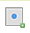

Coordinates of value selected will be shown below the map:

This functionality is enabled only for raster datasets.
Click on  to activate the query by point functionality: left mouse click on the map to select a valid point identified by x and y coordinates:
Coordinates of value selected will be shown below the map:
This functionality is enabled only for raster datasets.